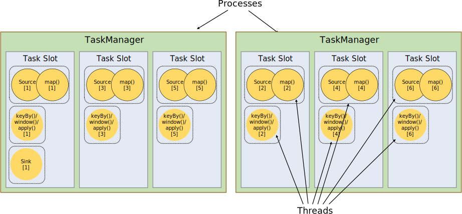

分布式运行环境（Distributed Runtime Environment）¶
Tasks and Operator Chains¶

满足约束的Operator Subtasks组成Operator Chains，每个task在一个线程中执行。将Operators链接成Task是非常有效的优化：它能减少线程之间的切换，减少消息的序列化/反序列化，减少数据在缓冲区的交换，减少了延迟的同时提高整体的吞吐量
Job Managers, Task Managers, Clients¶

- JobManagers(Masters)：任务调度、Checkpoints、故障恢复
- TaskManagers(Workers)：执行任务（
Subtasks）、缓冲和交换数据流
Task Slots and Resources¶

- TaskManager（JVM 进程）
- Task Slot 是对 TaskManager 资源（内存）的隔离和划分
每个 TaskManager 有多个 Slot 的话，也就是说多个 Task 运行在同一个JVM中。而在同一个 JVM 进程中的 Task，可以共享 TCP 连接（基于多路复用）和心跳消息，可以减少数据的网络传输。也能共享一些数据结构，一定程度上减少了每个 Task 的消耗

- Job所需的 Task Slots数与其最高的并行度一致
- Slot共享使资源得到更充分的利用
State Backends¶

- 内存（Hash Map）
- RocksDB（Key/Value）
Savepoints¶
- 用于恢复程序（程序升级或集群维护）
- 通过 REST APIs 或命令手动触发